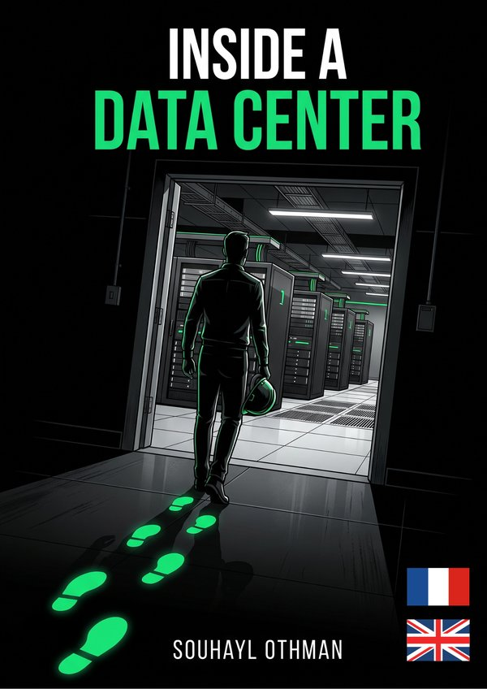

A visual guide designed to take you from zero knowledge to confidently participating in a data center design meeting. This isn’t an electrical engineering manual.
Un guide visuel pour passer de zéro connaissance à une participation en toute confiance à une réunion de conception de data center. Ce n’est pas un manuel d’ingénierie électrique.
Everyone in the room is throwing around MW, PUE, Tier III, N+1 — and nodding like it’s obvious. This isn’t an electrical engineering manual. It’s the visual crash-course that gets you from zero to genuinely useful in that meeting, without wading through 400 pages of standards documents.
Votre premier dossier data center arrive sur votre bureau. Et maintenant ? Tout le monde en réunion parle de MW, PUE, Tier III, N+1 — et acquiesce comme si c’était évident. Ce n’est pas un manuel d’ingénierie électrique. C’est le cours accéléré visuel qui vous rend réellement utile dès cette réunion, sans vous noyer dans 400 pages de normes.
MW, PUE, Tier, redundancy — the essential terms explained without jargon, so you stop nodding blindly.
Vocabulaire décodé — MW, PUE, Tier, redondance — les termes essentiels expliqués sans jargon, pour arrêter d’acquiescer à l’aveugle.
Who builds data centers, who operates them, and how the players fit together end to end.
L’écosystème complet — Qui construit les data centers, qui les exploite, et comment les acteurs s’articulent de bout en bout.
Power, cooling, structure and security — how a facility actually works, floor by floor.
Ce qu’il y a derrière les murs — Énergie, refroidissement, structure et sécurité — comment une installation fonctionne vraiment, étage par étage.
Hyperscale campuses, AI infrastructure and sustainability — where the industry is heading.
Les data centers modernes — Campus hyperscale, infrastructure IA et durabilité — là où va l’industrie.
A glossary, a project checklist, and the common mistakes to avoid on your first job.
Boîte à outils terrain — Un glossaire, une checklist projet et les erreurs courantes à éviter dès votre premier chantier.
“Not an electrical engineering manual — a visual guide to walk in prepared.”— from the introduction« Pas un manuel d’ingénierie électrique — un guide visuel pour arriver préparé. » — extrait de l’introduction
Architects, civil engineers, BIM managers and construction professionals approaching a data center project for the first time — or wanting to sharpen their understanding of the subject before the next one.
Architectes, ingénieurs civils, BIM managers et professionnels de la construction qui abordent un projet de data center pour la première fois — ou qui veulent affiner leur compréhension avant le suivant.
Speak the engineers’ language in design reviews.
Architectes — Parlez le langage des ingénieurs en revue de conception.
Understand how structure serves power and cooling.
Ingénieurs civils — Comprenez comment la structure sert l’énergie et le refroidissement.
Model with context, not just clash detection.
BIM managers — Modélisez avec du contexte, pas seulement de la détection de conflits.
Know what “Tier III” actually demands on site.
Équipes de chantier — Sachez ce que « Tier III » exige réellement sur chantier.
I thought that I know everything about dc projects, now I realised that I am not ; thanks Suhayl for this bookSimply awesome! I liked the style aslo, this reminds me of the DK Publishing style !Merci , pour ce prix , cet ebook est vraiment génial 👍Ce livre m'a évité des semaines de recherches éparpillées, mais tu n'a pas parler du bim dedans !I'd been putting off learning the data center vocabulary for months — always seemed like a rabbit hole. This book got me from zero to genuinely useful in a weekend. Clear, visual, no unnecessary jargon. Hoping for a full English edition down the line, but the diagrams alone were worth itHonnêtement sceptique au départ — je connais déjà bien le sujet techniquement. Mais l'angle 'ce que ça change pour l'architecte' est rare et bien traité. Je l'ai recommandé à toute mon équipe MEPJ'étudie encore et je me suis toujours senti perdu face au vocabulaire des data centers en stage. Ce livre parle une langue que je comprends, avec des visuels qui restent en tête bien après la lecture← swipe / scroll →
It’s a Kindle ebook sold on Amazon. Read it with the free Kindle app on any phone, tablet or computer, or on a Kindle device.
They’re two separate Amazon listings — pick the edition you want above. Each one is the same visual guide, fully written in that language.
Yes — that’s exactly who it’s written for. No jargon is assumed; every term is introduced before it’s used.
C’est un ebook Kindle vendu sur Amazon. Lisez-le avec l’application Kindle gratuite sur téléphone, tablette ou ordinateur, ou sur une liseuse Kindle.
Ce sont deux fiches Amazon distinctes — choisissez votre édition ci-dessus. Chaque édition est le même guide visuel, entièrement rédigé dans sa langue.
Oui — c’est exactement pour vous. Aucun jargon n’est supposé ; chaque terme est introduit avant d’être utilisé.
Preview the first pages directly on Amazon · Consultez les premières pages directement sur Amazon
// free reads from the blog